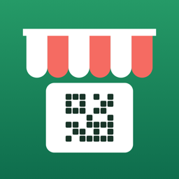

Market Stall
A simple register for market and fair vendors: ring up a sale, show the customer a big total and a scan-to-pay QR code.
Table mode on iPad and iPhone Duo
Lay the iPad, or the open iPhone Duo, flat on the table between you and the customer, upright like a page, and tap Show customer. The far half turns to face the customer with the total and QR code; the near half keeps the order, the payment choice and the hold-to-confirm Paid button. Turn table mode off in Setup if you would rather hand the device over.
Made for iPhone Duo
Ring up the order on the inner screen, then close the phone completely: the total and your payment QR code appear on the outer screen, ready to turn toward the customer. Open it again and you're back at the order, unchanged. On any other iPhone, one tap on Show customer does the same.
Note: iOS lets an app use the outer screen only while the phone is closed. Half-folded poses with the outer screen toward the customer (tent or seated) show nothing from any app except Camera. Use table mode or close the phone instead.
At the register
- Quantities and sold out. Press and hold an item to choose a quantity, or to mark it sold out and put it back on sale.
- Pinned items. In Setup, open an item and turn on Pin to the top of the register.
- Same again. In the More menu (the three dots), Same again rings up your last sale once more.
- Parked orders. Park order in the More menu sets an order aside while you serve someone else. Tap the orange bar above the order to bring it back. Parked orders are kept until you close the app.
- Order numbers. Turn on Order numbers in Setup. Each sale shows the day's next number on the thank-you screen, and Orders on the register lists the ones still waiting; tap Handed over when the customer has theirs.
- Markets. In Setup under Markets, add the places you sell and pick where you are. Each sale is marked with that market; you can also switch from the More menu. Renaming or deleting a market later doesn't change past sales.
- Cash drawer. In the More menu, Cash drawer > Start the drawer and enter the change you start with. At the end, Count and close and enter the cash you count: the app shows what should be there (the float plus cash sales, tips included), whether you're over or short, and what to bank.
- Event prices. Give an item an event price in Setup, then switch Event prices on from Setup or the More menu. Items without one keep their normal price.
The customer screen
- Follow-me QR. In Setup under Follow QR, enter an Instagram @name or a web link. A small code appears on the thank-you screen after you mark a sale paid, never next to the payment code. The thank-you screen then stays for 10 seconds, or until tapped.
- Change in table mode. Your half has an Order / Change switch. Showing the customer Cash brings up the change calculator: tap what they handed you and the change appears.
- Your logo. In Setup under Stall, choose a picture. It appears above the total, on the price list and on the summary card.
- Tips and round up. Offer percentage tips, a round up to the next whole amount, or both. A round up is recorded as a tip.
- Items and price list. You can show the order's items under the total. With no order on the register, Show price list in the More menu (or closing an iPhone Duo) shows your stall name and prices; a tap brings the register back.
- Language. The customer screen's fixed text can be in English, Spanish, French, German, Italian or Portuguese. The rest of the app follows your device.
After the market
- Today shows totals by payment method and item, sales by hour, and low stock.
- Sales over time (in Today) totals any run of days, with this month, last month and this year one tap away. With markets set up it shows takings per market and per day at each, so you can compare a market you go to every week with one you tried once. Export CSV gives every sale in the range.
- Packing list suggests how many of each item to bring, from what sold on your last four market days.
- Share summary card makes a picture of the day's total and best seller.
- Widget. Add Today's Sales to your Home Screen or Lock Screen to see the day's total without opening the app. It updates after each sale.
- Shortcuts. Export Today's Sales hands the day's CSV to a shortcut; Export Sales does the same for any two dates.
Getting started
- Open Setup (the gear). Add your items, or tap Add sample items to try it.
- Under Payment methods, add your Cash App $Cashtag, PayPal.me name, Venmo username, any payment link, or for euros a bank transfer (your name and IBAN). Use Test this link and scan the code with another phone before your first market.
- On the register, tap items, then Show customer. On iPhone Duo you can just close the phone instead; on an iPad or open Duo lying flat, Show customer starts table mode.
- When the customer has paid, press and hold Paid (or Cash) at the top of the customer screen, or on your half in table mode.
Questions
Does Market Stall take payments? No. The QR code opens the customer's own payment app with your profile, and the amount filled in where that app supports it (Cash App and PayPal). Venmo opens your profile and the customer types the amount shown. Always check your payment app before tapping Paid.
How does the bank transfer code work? It's the European EPC code (sometimes called a GiroCode or SEPA QR). Most banking apps in the euro area scan it and fill in your name, IBAN and the amount; the customer confirms the transfer. Instant transfers arrive in seconds, but check your bank before handing over. It only appears when your stall's currency is euros. UPI works the same way for rupees.
Does it need a signal? No. Everything works offline and stays on your device.
I changed currency and my prices look different. Prices keep their numbers (8.00 stays 8.00), and a currency without cents rounds them to whole amounts. Check your items after switching. Past sales keep the currency they were rung up in.
The widget shows nothing. Open Market Stall once so it can write today's total, then look again.
How do I get my sales out? Open Today and tap Export CSV for the day, or Sales over time for any range of dates. There is one row per item sold, with its market.
I made a mistake on a sale. In Today, swipe the sale and tap Void. Its stock is put back.